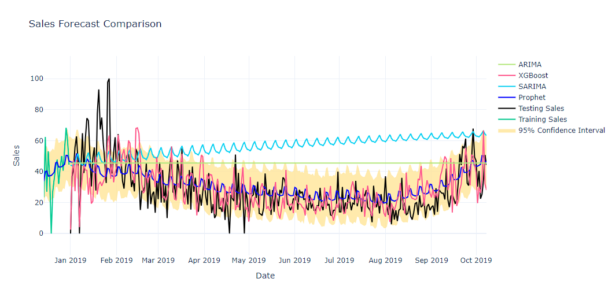

July 2026
This project was completed as an exploration of various machine learning models for long-term sales forecasting. The objective was to compare the performance of different models and identify the most effective approach for predicting future sales trends.
This was my first time exploring the field of sales forecasting, and I was particularly interested in understanding how different models could be applied to real-world data. The project involved preprocessing historical data, and then applying various machine learning algorithms to forecast future sales.
During this project, one of the main challenges was implementing the SARIMA model with annual seasonality. Because annual seasonality requires a long historical time series and significantly greater computational resources for parameter tuning, training the model became impractical with the available hardware. As a result, I explored alternative seasonal periods and ultimately configured the SARIMA model to capture weekly seasonality instead.
Although this approach reduced the computational burden, it was unable to fully capture the annual seasonal patterns present in the data. Consequently, the model produced lower forecasting accuracy compared with the other evaluated models, particularly Prophet, which was able to model the long-term seasonal trend more effectively.

Try the interractive version of this visualization here: Google Colab
| Model | Mean Squared Error (MSE) | Mean Absolute Error (MAE) | Mean Absolute Percentage Error (MAPE) |
|---|---|---|---|
| Prophet | 177.02 | 10.17 | 44.76%* |
| SARIMA | 1137.00 | 30.70 | 162.90%* |
| XGBoost | 216.51 | 11.27 | 46.26% |
| ARIMA | 559.25 | 21.12 | 111.70%* |
*MAPE was calculated by first excluding the zero values in the actual sales to avoid division by zero errors.
Based on both the evaluation metrics and the visualization, Prophet is the preferred forecasting model. It achieved the lowest prediction errors (MSE, MAE, and MAPE) while effectively capturing the overall trend and seasonal patterns without producing excessive fluctuations. In addition, Prophet requires less computational effort than SARIMA, making it the best balance between accuracy, stability, and efficiency for this forecasting task.
See my codes and workings here: Google Colab